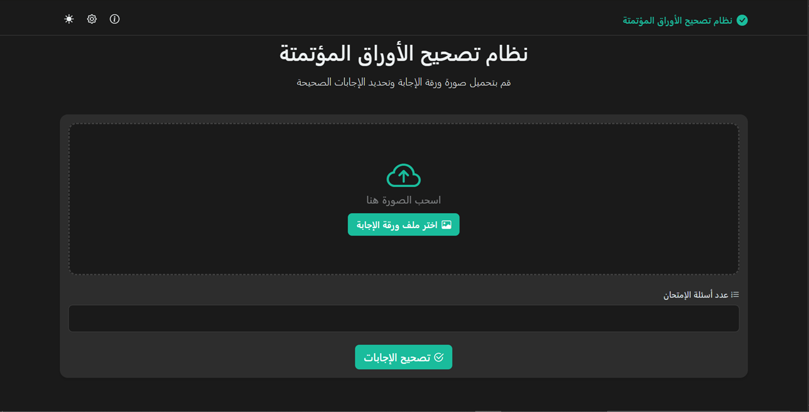

نظام تصحيح الإمتحانات المؤتمتة
برنامج متكامل يقوم بتصحيح أوراق الإمتحانات المؤتمتة
مبرمج متخصص في بناء الواجهات التفاعلية وأنظمتها الخلفية.
أؤمن بأن أفضل البرمجيات هي التي لا يشعر المستخدم بوجودها. هي تلك التي تعمل بسلاسة، تؤدي وظيفتها بكفاءة، وتجعل الحياة أسهل. وظيفتي هي هندسة هذه البساطة، من خلال كتابة كود نظيف، قابل للتطوير، ومصمم ليتحمل اختبار الزمن.
شاب شغوف بالبرمجة من صغري. فقد بدأت بالتعلم من عمر 12 سنة وبدأت أسس نفسي وأزيد مهاراتي لأختر وأركز على مجال تطوير تطبيقات الويب Full Stack Developer مع خبرة طفيفة بلغاة مثل c أكتسبتها من المناهج التأسيسية وأهمها cs50 وهو نفسه الذي كان حجر الأساس عندي
برنامج متكامل يقوم بتصحيح أوراق الإمتحانات المؤتمتة
أحياناً يقوم أحد الأحبار بالتوقف أو التقطع أثناء الطباعة وبرنامجي هذا يقوم بطباعة النقص فقط
إذا كان لديك فكرة تود تحويلها إلى حقيقة، أو كنت تبحث عن مطور شغوف للانضمام إلى فريقك، فأنا هنا للاستماع.
تواصل معي